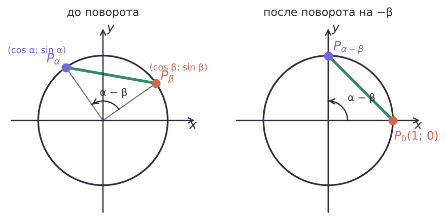
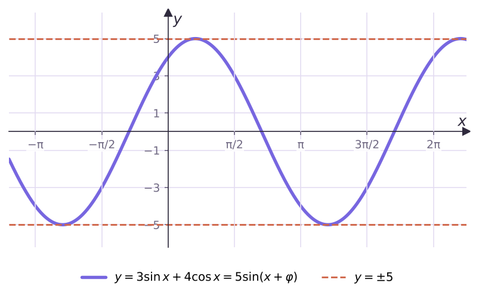

Синус, косинус и тангенс суммы и разности

β → −β: cos(α + β) = cos α cos β − sin α sin β
| α + β | α − β | |
|---|---|---|
| cos | cos α cos β − sin α sin β | cos α cos β + sin α sin β |
| sin | sin α cos β + cos α sin β | sin α cos β − cos α sin β |
| tg | (tg α + tg β)/(1 − tg α tg β) | (tg α − tg β)/(1 + tg α tg β) |
= √(a² + b²) · sin(x + φ)
3 sin x + 4 cos x = 5 sin(x + φ): значения от −5 до 5.
